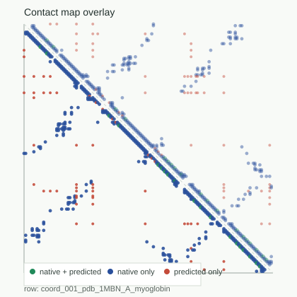
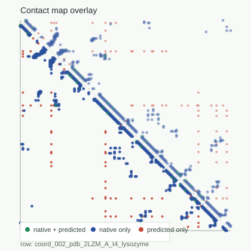
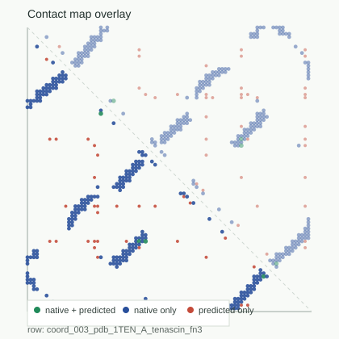
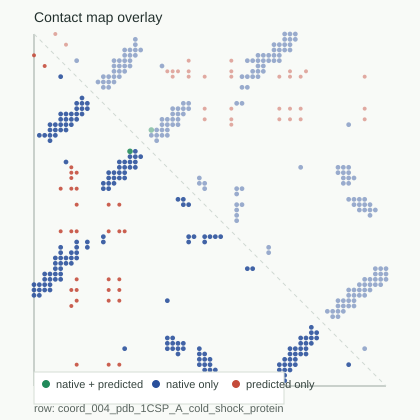
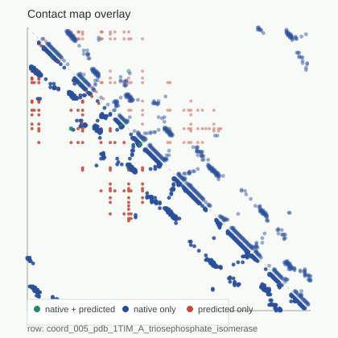
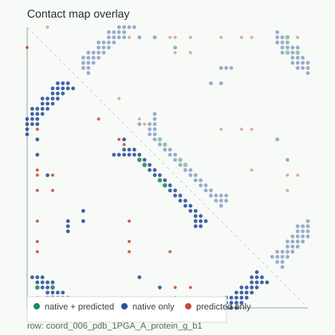
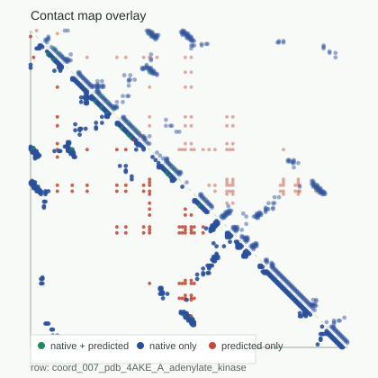
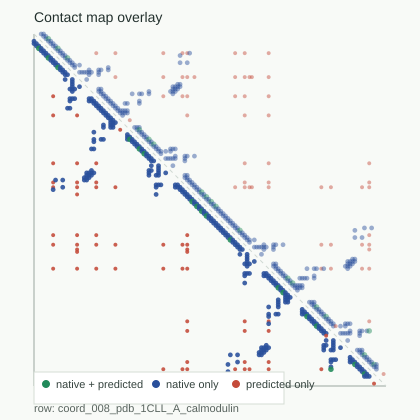

{kind=link}
{kind=link}
{kind=link}
{kind=link}
{kind=link}
{kind=link}
{kind=link}
{kind=link}
{kind=link}
{kind=link}
{kind=link}
{kind=link}
{kind=link}
{kind=link}
{kind=link}
{kind=link}
coord_001_pdb_1MBN_A_myoglobin

F1: 0.080679 | coordinate_visible_partial_success
Sequence-only contact hypotheses are scored against C-alpha native contact maps extracted from locked RCSB coordinate traces.
Native maps are derived from locked RCSB C-alpha coordinate traces.
Coordinates and native contacts are used only after sequence-only prediction.
The benchmark scores contact topology, not atomistic pathways or dynamics.
This surface is a baseline proof-target upgrade, not another repair pass.
The benchmark can expose failures but cannot claim folding is solved.
| row | source | class | native contacts | contact_map_f1 | cohort | visuals |
|---|---|---|---|---|---|---|
| coord_001_pdb_1MBN_A_myoglobin | 1MBN:A | alpha_rich | 395 | 0.080679 | coordinate_visible_partial_success | overlay | trace |
| coord_002_pdb_2LZM_A_t4_lysozyme | 2LZM:A | alpha_rich | 428 | 0.058824 | coordinate_low_recall_gap | overlay | trace |
| coord_003_pdb_1TEN_A_tenascin_fn3 | 1TEN:A | beta_rich | 240 | 0.02807 | coordinate_beta_long_range_gap | overlay | trace |
| coord_004_pdb_1CSP_A_cold_shock_protein | 1CSP:A | beta_rich | 177 | 0.009524 | coordinate_beta_long_range_gap | overlay | trace |
| coord_005_pdb_1TIM_A_triosephosphate_isomerase | 1TIM:A | alpha_beta_mixed | 725 | 0.014724 | coordinate_false_contact_overprediction | overlay | trace |
| coord_006_pdb_1PGA_A_protein_g_b1 | 1PGA:A | alpha_beta_mixed | 137 | 0.084848 | coordinate_visible_partial_success | overlay | trace |
| coord_007_pdb_4AKE_A_adenylate_kinase | 4AKE:A | multidomain_boundary | 559 | 0.043143 | coordinate_architecture_gap | overlay | trace |
| coord_008_pdb_1CLL_A_calmodulin | 1CLL:A | multidomain_boundary | 327 | 0.089776 | coordinate_visible_partial_success | overlay | trace |

F1: 0.080679 | coordinate_visible_partial_success

F1: 0.058824 | coordinate_low_recall_gap

F1: 0.02807 | coordinate_beta_long_range_gap

F1: 0.009524 | coordinate_beta_long_range_gap

F1: 0.014724 | coordinate_false_contact_overprediction

F1: 0.084848 | coordinate_visible_partial_success

F1: 0.043143 | coordinate_architecture_gap

F1: 0.089776 | coordinate_visible_partial_success
This benchmark extracts coarse C-alpha native contact maps from locked RCSB coordinate traces, then scores sequence-only contact hypotheses after prediction. It upgrades the proof target beyond toy locked contacts, but it is still not atomistic folding, mechanism discovery, or a solved folding engine.